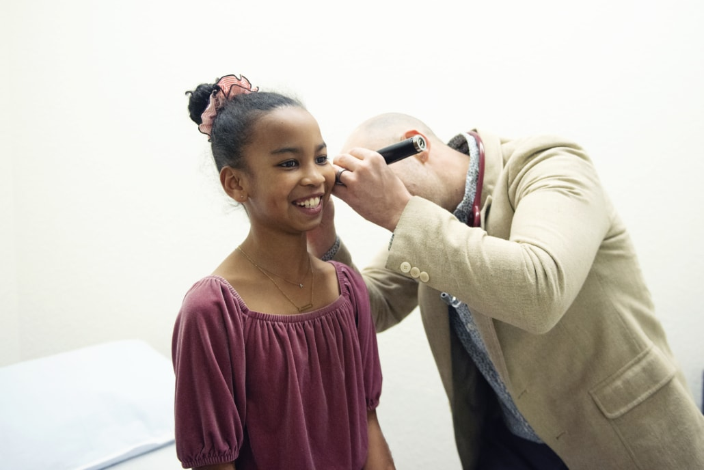

In our last blog, we discussed integrative, functional, and naturopathic medicine
as being similar medical approaches to caring for the Whole Person. Most people
who access this type of healthcare are adults, but it’s just as important
(arguably, more important) to approach healthcare for children holistically.
In fact, Whole Child Health is an initiative promoted [...]

What’s the Difference Between Integrative, Functional, and Naturopathic Medicine?
January 11, 2024
Integrative Medicine is often talked about interchangeably with Functional Medicine or Naturopathic Medicine—it can get confusing. Medicine is “integrative” when it brings together diagnostic techniques and medical treatments, regardless of what tradition they come from, to support your health and healing. At Link Community Clinic, our physicians are trained in naturopathic medicine, which is a [...]
Flu Shots Are Here!
September 20, 2023
We received our first shipment of flu shots for the 2023-4 season today. Our vaccines are the preservative-free quadrivalent version. Flu shots are effective at reducing both incidence and severity of illness.
The 2022-3 season was severe, with at least 300,000 hospitalizations and 27 million cases (2022-2023 U.S. Flu Season: Preliminary In-Season Burden Estimates, 2023). We anticipate similar numbers this year. Typically, only half of adults in the US get the flu vaccine annually, which leaves a lot of vulnerable people unprotected.[...]